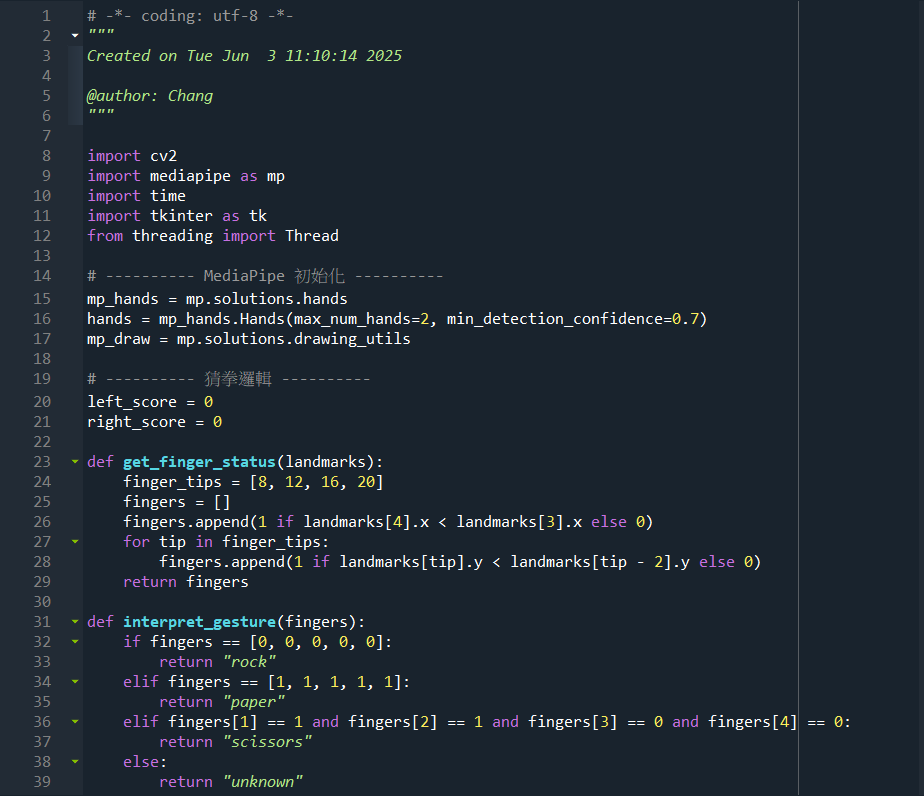
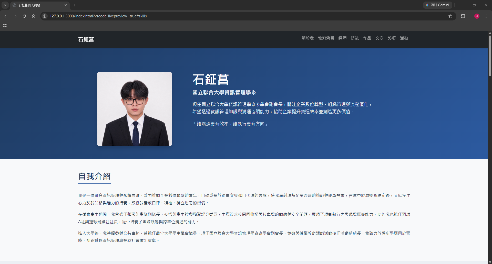
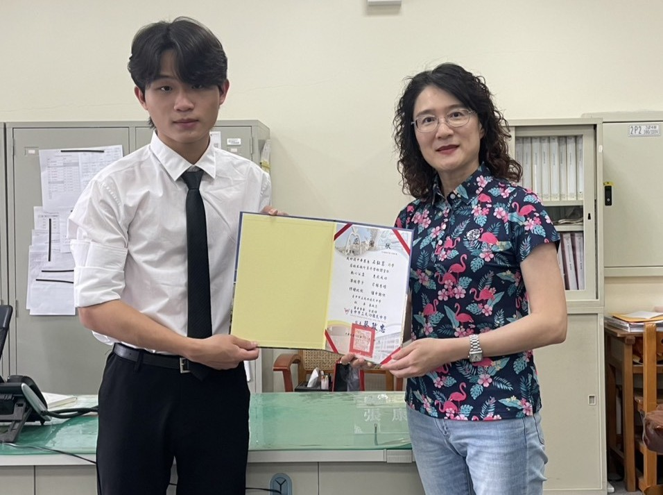

文章分享
企業數位轉型的重要性
在課程學習與實務經驗中，我深刻體會到資訊技術對企業的重要性。 隨著市場快速變化，企業不僅需要改善產品本身， 更需要透過資訊系統提升工作效率與決策品質。
以我家中的文具進口代理事業為例， 傳統的人工管理模式常面臨庫存、訂單追蹤等問題， 如果能引進適當的資料系統與分析工具， 就能大幅降低成本、提升客服品質， 未來我希望將資訊管理知識應用於家業優化， 同時也期許能協助其他企業完成數位轉型。
現任國立聯合大學資訊管理學系系學會副會長，關注企業數位轉型、組織管理與流程優化，
希望透過資訊管理知識與溝通協調能力，協助企業提升營運效率並創造更多價值。
「讓溝通更有效率，讓執行更有方向」
我是一位融合資訊管理與永續思維、致力推動企業數位轉型的青年，自幼成長於從事文具進口代理的家庭，使我深刻理解企業經營的挑戰與變革需求，在家中經濟逐漸穩定後，父母投注心力於我品格與能力的培養，鼓勵我養成自律、積極、獨立思考的習慣。
在僑泰高中期間、我曾擔任整潔糾察隊副隊長、交通糾察中控與整潔評分委員，主導改善校園回收場與校車場的動線與安全問題，展現了規劃執行力與現場應變能力，此外我也擔任羽球A社與撞球飛鏢社社長，從中培養了團隊領導與跨單位溝通的能力。
進入大學後、我持續參與公共事務，曾擔任義守大學學生議會議員、現任國立聯合大學資訊管理學系系學會副會長，並參與偏鄉教育課輔活動接任活動組組長，我致力於將所學應用於實踐，期盼透過資訊管理專業為社會做出貢獻。
負責校園環境管理與清潔檢查工作及隊員招募培訓。
規劃社團活動與訓練課程、進行社團管理，組織比賽與交流活動。
參與班級衛生評分工作， 確保評審公平性與標準一致。
領導社團成員開展多項活動、進行社團管理，建立社團文化與凝聚力。
負責校園交通秩序維護與安全管理，指揮交通與引導校車進出。
主導改善校園回收場與校車場人為問題， 優化動線設計與安全管理措施。
回母校進行升學探討演講，分享高中學習經驗與生涯規劃。
代表資訊管理學系擔任系議員、參與校內學生自治事務與校務議題討論，推動校園改革。
獲全體會長候選人邀請擔任副會長，並於會長當選後正式受聘，展現團隊領導與協調能力受肯定；後因轉學規劃請辭。
主導系學會行政管理與活動規劃， 負責跨部門協調與組織發展。
參與教育部數位學伴計畫相見歡活動與籌備，擔任活動隊輔， 帶領偏鄉孩童闖關互動與學習。
主導課輔的各項活動與工作， 並進行人力調度與活動現場指揮。
負責相見歡活動主持工作與時間控制， 營造溫馨、融洽的氛圍。

使用 Python、MediaPipe、OpenCV 開發的雙人互動式遊戲，透過攝影機 實時辨識玩家手勢（剪刀、石頭、布） 使用手部關鍵點分析判斷手指張合情形， 程式自動判斷勝負並顯示積分， 實踐了邏輯判斷與電腦視覺技術。

本網站使用 HTML、CSS 與 Bootstrap 框架開發，採用響應式網頁設計（RWD），
可依不同裝置螢幕尺寸自動調整版面配置，網站內容包含自我介紹、教育背景、
經歷與幹部經驗、專業技能、專案作品、文章分享、獲獎榮譽及活動紀錄等內容。
在課程學習與實務經驗中，我深刻體會到資訊技術對企業的重要性。 隨著市場快速變化，企業不僅需要改善產品本身， 更需要透過資訊系統提升工作效率與決策品質。
以我家中的文具進口代理事業為例， 傳統的人工管理模式常面臨庫存、訂單追蹤等問題， 如果能引進適當的資料系統與分析工具， 就能大幅降低成本、提升客服品質， 未來我希望將資訊管理知識應用於家業優化， 同時也期許能協助其他企業完成數位轉型。

回母校進行升學探討與經驗分享演講

聯大偏鄉課輔相見歡主持

聯大偏鄉課輔活動團體照